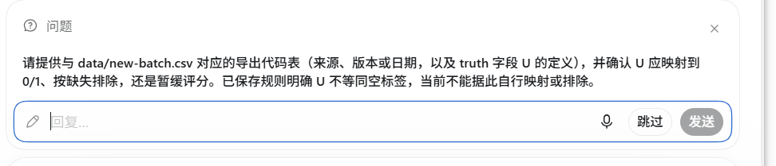
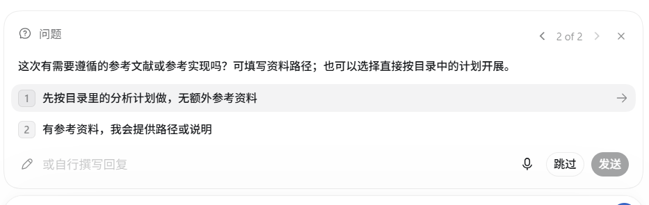
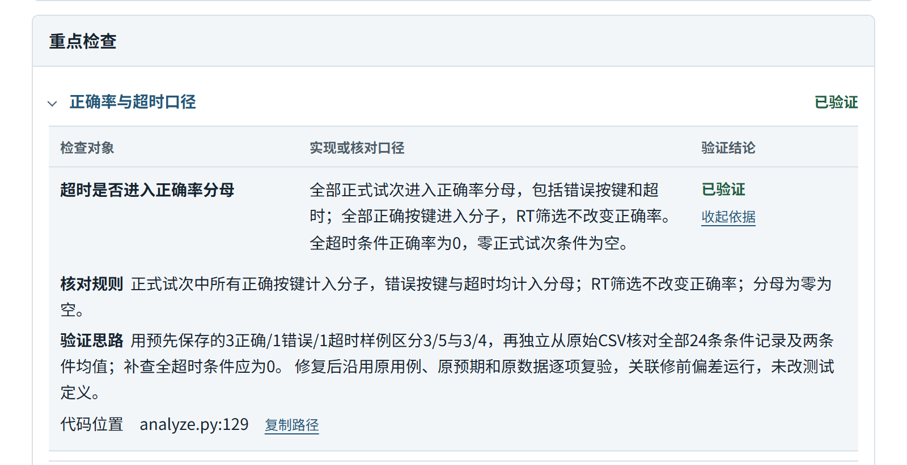

Research Code Audit
科研代码审阅插件
一个帮研究者核对分析代码的 Codex 插件。它按研究计划运行测试、定位偏差，经授权后修复，并沿用原测试复验。报告交代结果，也指出仍需研究者决定的事项。
审阅工作流
确认规则
计划里已经明确的规则直接沿用。遇到会影响结果、还没定下来的处理方式，插件会在 Codex 里请研究者确认。
参考资料还没确认时，插件会在写代码前询问是否有需要遵循的文献。涉及论文方法时，它会查阅相关段落或公式，核对代码里的处理和计算。


功能测试
AI 根据已确认的规则设计测试，挑出能让正确实现和常见错误算出不同结果的输入。
校验程序用同一份输入运行实际脚本，把输出和事先确定的预期比对。发现偏差时，报告会指出对应的代码位置。
- 设计测试输入选能暴露实现偏差的输入
- 独立确定预期按规则复算，或采用参考结果
- 运行实际脚本用同一份输入取得真实输出
- 比对并记录将结论和验证依据写入报告



为什么做
一位做心理学实验的同学用 AI 写实验和分析代码。结果看起来合理时，她还是很难判断脚本有没有按想法计算，也不知道该从哪里开始测。
调研 Kiro、GSD 和 ARIS 时，我关注的是从计划走到交付的过程。最后选了一个较小的切口：把会影响研究结论的规则变成可运行的测试，再把结果和依据还给研究者。
报告怎么改
一次试用中，对方觉得报告比直接读代码清楚，也觉得检查项太多，很难决定先看什么。
- 改版前
- 分成「需要处理」和「其他实现」。通过的检查放在同一层。
- 改版后
- 「需要处理」排在最前，已检查的内容按对本次研究结论的影响分成重点检查和辅助检查。
试用之后
同一位试用者反馈，新版更容易找到优先想看的检查，但他仍担心 AI 漏掉某段实现。自己逐行对照费时间，请 AI 总结也很难知道有哪些地方没看过。
因此，报告里的验证结论要和本次覆盖的范围一起读。检查顺序解决了先看哪里的难题，覆盖范围决定了读者能据此判断到哪一步。